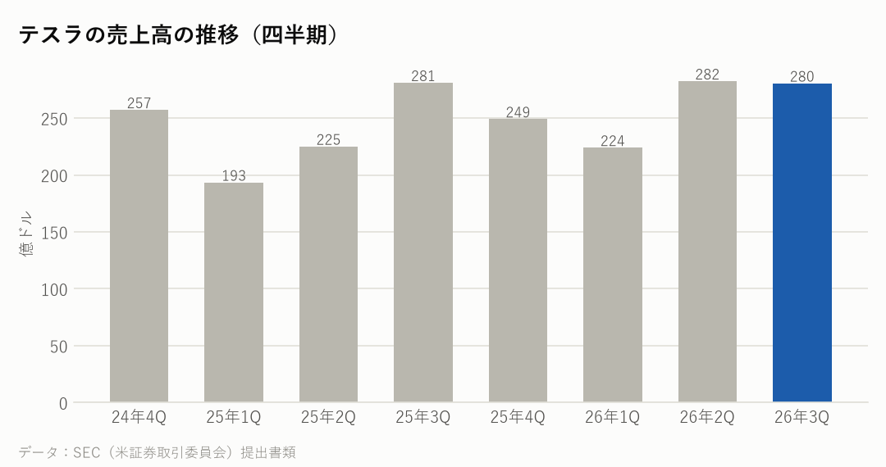
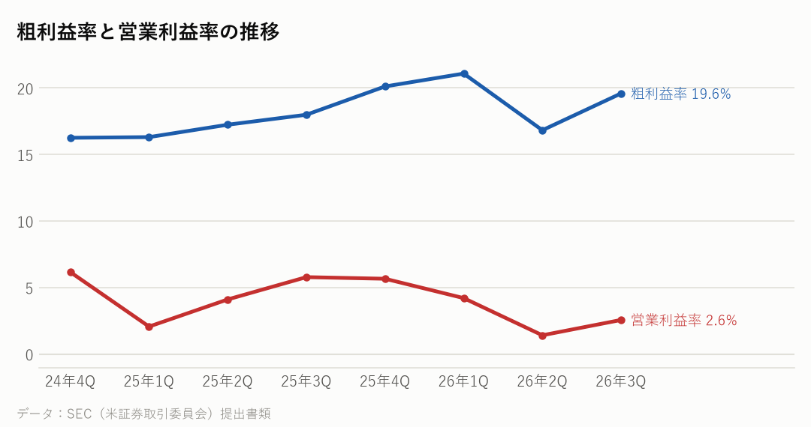
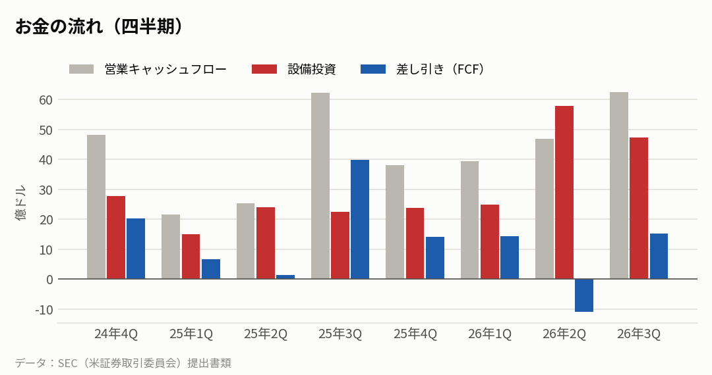
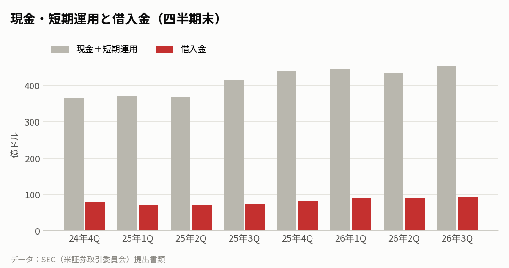
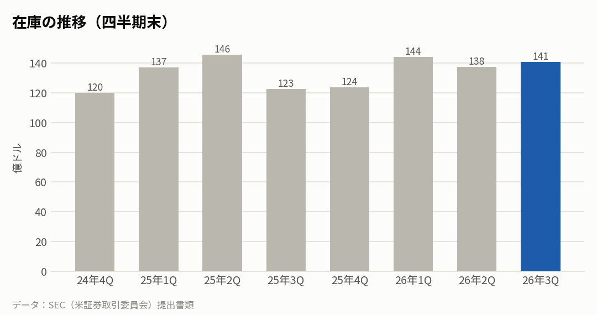

TSLA｜2026年7〜9月期の決算｜決算発表 2026年10月21日
テスラの決算：売上は横ばい、設備投資は前年の約2.1倍に
7〜9月期の売上高は280億ドルで、前年同期とほぼ同じ（−0.2%）だった。車の売上は3%減ったが、サービスなどが33%伸びた。設備投資は47億ドルと前年同期の約2.1倍にふくらみ、営業利益率は2.6%に下がった。
主な数字（2026年7〜9月期）
| 今回 | 前年同期 | 前年比 | |
|---|---|---|---|
| 売上高 | 280億ドル | 281億ドル | -0.2% |
| 粗利益率 | 19.6% | 18.0% | |
| 営業利益率 | 2.6% | 5.8% | |
| 純利益 | 8億ドル | 14億ドル | |
| 1株利益（希薄化後） | 0.22ドル | 0.39ドル |
部門ごとの売上
| 部門 | 売上 | 前年比 |
|---|---|---|
| 自動車 | 206億ドル | -3.0% |
| エネルギー（蓄電池など） | 29億ドル | -16.0% |
| サービス・その他（中古車・充電・保険・修理など） | 46億ドル | +33.0% |

会社の見通し・計画
| 売上高の見通し | 示していない |
|---|---|
| 2026年の設備投資 | 250億ドル超（計画） |
| 1〜9月の設備投資 | 130億ドル |
| 納車台数（7〜9月） | 48.7万台（−2.1%） |
| 蓄電池の設置（7〜9月） | 13.7GWh |
- テスラは売上や利益の数字の見通しを出していない。2026年の設備投資は「250億ドル超」の計画で、1〜9月の実績は約130億ドル。報道（Electrek）によると、計画どおりなら10〜12月期だけで約120億ドルを使う計算になる。
- 完全自動運転（FSD）の有料の利用は174万件で、前年比67%増（一括購入を含む）。
もうけの力

お金の状況



投資している分（出資の評価額）
| 未上場株などへの出資（帳簿上の価値） | ― |
|---|---|
| 上場株への出資（時価） | ― |
| 合計 | 0億ドル |
| ビットコインの評価益（7〜9月期・報道より） | +2.88億ドル |
| SpaceX 株の評価損（7〜9月期・報道より） | −1.42億ドル |
- テスラはビットコインを持っており、値動きに合わせて毎期評価し直す。7〜9月期は約2.9億ドルの評価益が純利益に入った。現金の出入りはない。
- 報道（Electrek）によると、SpaceX 株への出資で約1.4億ドルの評価損が出た。
マグニフィセント7の中で比べると
各社の直近の四半期。在庫の日数は「在庫が売上原価の何日分か」。
| 会社 | 決算期末 | 売上高 | 前年比 | 粗利益率 | 営業利益率 | 設備投資/売上 | 在庫の日数 |
|---|---|---|---|---|---|---|---|
| テスラ | 2026-09 | 280億ドル | -0.2% | 19.6% | 2.6% | 16.9% | 57日 |
| アップル | 2026-09 | 1,145億ドル | +11.7% | 47.9% | 31.1% | 2.0% | 22日 |
| マイクロソフト | 2026-09 | 923億ドル | +18.8% | 67.8% | 49.8% | 42.7% | 6日 |
| アルファベット | 2026-09 | 1,276億ドル | +24.7% | 59.7% | 31.8% | 40.3% | 24日 |
| アマゾン | 2026-09 | 2,019億ドル | +12.1% | 53.2% | 13.9% | 38.3% | 41日 |
| メタ | 2026-09 | 646億ドル | +26.1% | 79.3% | 20.1% | 52.5% | ― |
| エヌビディア | 2026-07 | 962億ドル | +105.9% | 75.0% | 66.2% | 2.8% | 119日 |
NasdaqWhy の視点：データから読み取れる注目点
決算資料と各社の公式データを並べて読み取れることです。将来を予想するものではありません。
- 設備投資は売上の約17%で、1年前（約8%）の2倍以上になった。研究開発費も28億ドルにふえた。AIの学習用の計算機、人型ロボットの Optimus、無人タクシーの Cybercab への投資が重くなっている。
- 営業キャッシュフローは63億ドルあり、設備投資を引いた差し引き（FCF）は15億ドルのプラス。手元の現金と短期運用は454億ドルで、借入金（約93億ドル）を大きく上回る。
- テスラは、AIの計算機、自動運転用のチップ、メモリー、電池を大量に使う「買う側」でもある。半導体や電池の値上げや不足は、テスラの粗利益率に出てくる。つながり：素材（電池の材料）・前工程（チップ・メモリー）→機器メーカー（テスラの車・蓄電池）→使う側。
- SpaceX とのつながり：新しい Roadster（ロードスター）は10月15日に SpaceX の施設で発表され、マスク氏は SpaceX のロケットの技術を組み合わせたと説明した。報道によると、マスク氏は SpaceX の決算説明会（10月20日）で、テスラと SpaceX がそれぞれ合併の可能性を検討する特別委員会をつくったと話した。条件や時期は示されておらず、実現には株主の承認が必要になる。
- エネルギー部門は、蓄電池の設置が13.7GWhと増えたのに、売上は16%減った。報道（Electrek）は、関税に関係した顧客への返金を理由の一つに挙げている。
- マグニフィセント7の中では、売上の伸び（−0.2%）と営業利益率（2.6%）がいちばん低い。設備投資の割合（約17%）は、マイクロソフト（約43%）やメタ（約53%）より低く、アップル（約2%）より高い。
次に確認したい決算・予定
- テスラの10〜12月期の生産と納車の発表（2027年1月初めの見込み）
- テスラの次の決算（2027年1月下旬の見込み）：設備投資が計画どおり増えたか、粗利益率がどうなったか。
- 新しい Roadster（空を飛べるとうたう車）の量産の進み具合：マスク氏は2028年に始めると話している。発表のデモは、坂を上って宙返りし、空気の噴射で着地するというもので、専門家からは「跳ねた程度」との指摘もある。
- エヌビディアの決算（11月下旬の見込み）：AIの計算機の需要を、売る側から確かめる材料。
関連リンク
出典：テスラ 決算発表（2026年10月21日）・四半期報告書（10-Q）・7〜9月期の生産と納車の発表、Electrek（2026年10月21日）、各社の SEC 提出書類、ABC11（2026年10月16日）、BigGo Finance
※情報提供のみ。投資判断はご自身でお願いします。※個人運営で、Nasdaq, Inc.とは無関係です。